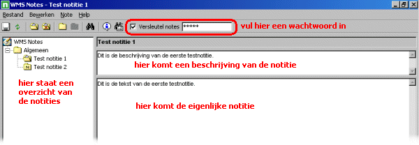

Werking van
De interface
Dit is een overzicht van de verschillende onderdelen van het hoofdscherm van .

Notities maken en wijzigen
De belangrijke functies geven een goed overzicht van de mogelijkheden van .
Als u een notitie hebt geselecteerd, dan kunt u in de tekstvelden de beschrijving en de notitie zelf wijzigen.
Het wordt afgeraden om afbeeldingen te plaatsen in een notitie. Dit vergroot de laadtijd van de notities sterk en het kan onverwachte reacties opleveren.
Verwante onderwerpen
Belangrijke functies
Opmaakfuncties
Notesbestanden
Zoeken en trefwoorden